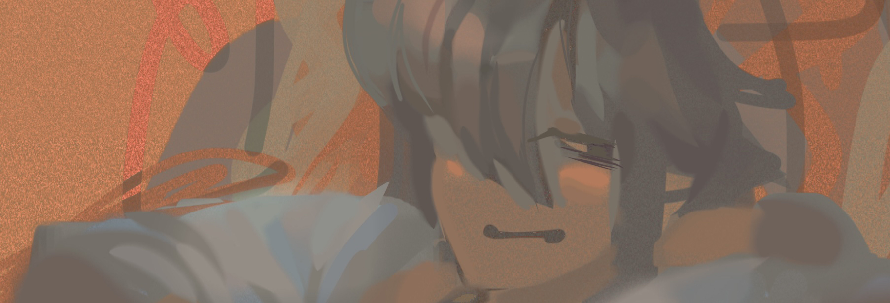

◊HOME
ember sācher's computer diary *-*
eyup, thx for clicking ! u have arrived at my monthly artdump: sacher sketchbook: home to the worlds most inconsistent artstyle, OR: the world's best range. (ha)
so basically i don't do well with social media & i no longer want to post my stuffs, but i still wanted a place to chronicle all of my digital art. and so, this semi-public(?), very informal artblog was made- a hopefully more hands-on and engaging approach to explore my hobbies & tangential thoughts w/o relying on 3rd party sites. every two months updates with a new batch of artwork i've made in that time. cool.
so come on down, make yourself at home. i got so many gritty doodledraws to share.
notice !
- javascript is used to load in the sidebar & hide/unhide some stuff when resizing the window. if there is no sidebar after clicking to another page, pls make sure that js is enabled ;o;
- site contains frequent profanity and occasional depictions of blood/violence in arts w/o tags if ur turned off by that
- site is mobile-friendly for the most part, but looks best on desktop
- as always, this place is constantly under construction :D
updates
mar 11 '24 – doodle dump posted in jan page, artblog landing page is entirely reformatted, new buttons and 'abt art' blurb posted in info page, AND new nav links in the topbar for monthly galleries :D ...also finally got around to setting up git to deploy to neocities. world-endingly levels of helpful actually. i have been living in squalor.
mar 2 '24 – 2 new arts in jan artblog.
feb 10 '24 – jan artblog up & favorites page update & some journal entries
dec 23 '23 – oct-dec artblog and accompanying inktober page added
dec 16 '23 – busy few weeks! dark mode implemented, favorites page added, new info page blurbs.
nov 3 '23 – misc backend and css edits + compressed apr-may, june-july, and doodles' images
oct 16 '23 – new layout edits. hope u like sans-serif
oct 14 '23 – aug-sept artblog up! also got rid of the site navigation blurbs on the info page. and, I DID IT, I FUCKING DID IT. I FIXED THE SHITASS BUG THAT CAUSED THE TOPBAR ELEMENTS TO SHIFT AROUND ON SAFARI AND ONLY SAFARI FOR SOME REASON. IT'S ALWAYS SAFARI MAN, SO ANNOYING RAAAAGHHHHHH.
oct 11 '23 – journal entry batch
sep 8 '23 – more organization, cleaned up a lotta the code on the monthly pages
aug 23 '23 – minor code edits. hopefully the artblog page is more accomodating for larger monitors now?
aug 1 '23 – 1 (one) journal entry up, and rearranged the layout of the "info" page. also some misc css edits.
july 28 '23 – june-july artblog up!
july 25 '23 – fixed some issues w iframe clipping into other stuffs
july 8 '23 – FIXED A BUG THAT CAUSED A LOTTA CLIPPING VISUALS ON MOBILE. THE SITE'S COMPLETELY MOBILE-FRIENDLY FR NOW. (FOR THE 3RD TIME LOL)
july 6 '23 – completely new layout & mobile-responsiveness ! also added school doodles, traditional art, and journal pages
june 18 '23 – cleaned up code + reformatted artblog, squential, and apr/may pages
june 13 '23 – created these changelogs + basic mobile-responsiveness ?
june 7 '23 – minor formatting & sentence edits
june 4 '23 – site created, all pages up !
to consider list, not to do. i am not a man of my word
☒ – sitemap
☒ – sticky "back to top" button
☐ – "selected works" page
☐ – split "info" into 2 seperate pages
☐ – alternate artblog format? [endless scroll/fullsize]
link back to my site with this button, if you like: